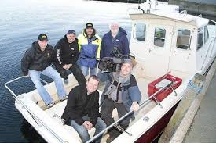
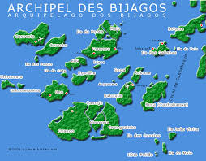

The team Bissahome
The 7 members of the team are here since 1996 to assure you a good stay here !

The location
Formerly a Portuguese colony, Guinea-Bissau is a small country, neighbouring Senegal and Guinea. One of the country's greatest riches is the Bijagos archipelago. Composed of about sixty paradisiacal islands, for the majority almost deserted, it is an unusual and charming place to stay. Along the coasts, very cut out by inlets, white sandy beaches alternate with mangrove swamps with a phantasmagorical look. This archipelago is one of the most beautiful in the world. Tourists are rare, the population is welcoming and nature expresses itself without restraint. Some of the islands are classified as a "national park" or "ecological reserve" and others are completely deserted.
The Bijagos archipelago is a popular destination for sport fishing. And for our guests, travelling and fishing in their National Parks, enjoying their absolutely deserted beaches, visiting the villages and interacting with the inhabitants and their cultural values, is a unique experience.
For some, it is said to be an "initiatory journey". For others, a break away from the stress.
